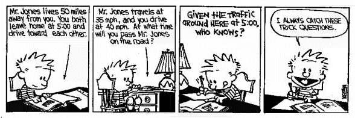

There are no rules in math
Don’t use hammers. Build them.
Thursday, October 15, 2015 · 5 min read
I’m going to pick on a math problem I find very annoying. It’s completely arbitrary, it has no beauty or elegance, and it is tedious and unenlightening to solve.
A long thin strip of paper is 1024 units in length, 1 unit in width, and is divided into 1024 unit squares. The paper is folded in half repeatedly. For the first fold, the right end of the paper is folded over to coincide with and lie on top of the left end. The result is a 512 by 1 strip of double thickness. Next, the right end of this strip is folded over to coincide with and lie on top of the left end, resulting in a 256 by 1 strip of quadruple thickness. This process is repeated 8 more times. After the last fold, the strip has become a stack of 1024 unit squares. How many of these squares lie below the square that was originally the 942nd square counting from the left?
— 2004 AIME II, #15
(The AIME is a prestigious invite-only mathematics exam used to select the US team for the International Mathematics Olympiad.)
Imagine this problem is on your homework. Your math teacher explained how to do it on the blackboard. She worked it out in detail, and the steps make sense at the time, but when you get home, you can’t remember what they were.
And then this problem shows up on your final exam, and you remember it’s that one problem you didn’t memorize how to do. You do your best, but you can’t figure it out. Maybe you made a silly mistake earlier in the problem and that messed everything up. You don’t have enough time to check your work, and your heart starts to beat faster.
Your teacher takes time out to talk to you after class, and explains that you really should concentrate more. She tells you that these simple “reasoning and problem-solving skills” are really important in most careers. You’ll need a good grade in math if you ever want to take AP Origami or Advanced Paper Folding Honors.
So you start going to a tutor after school. Even though it’s kind of expensive, your parents agree that it’s important for you to catch up to your peers.
Your tutor does the same things in class, only, you’re much more tired after school and you can’t focus as well. But your friends say they go to tutors, and they get stellar grades, so you stay with it.
Next year, you take an easier math class. You only need to survive until the end of high school, right? Then you can forget all this nonsense and spend your time learning what’s useful.
There are two very different ways we could look at math.
The first way to look at math is “math-is-a-hammer”. Trying to measure the height of this building? Trigonometry! Computing your odds at a casino? Probability! Math gives you a huge set of tools you can throw at problems.
A couple of my posts on here have been about math-hammering. You math-hammer whenever you take a system in the real world and model it in a logical way. Usually, you do it in order to predict something about your system.
Our education system, of course, focuses entirely on math-hammering. We use math-hammers in elementary school arithmetic to find out how many apples Joe should give Bob, and we use math-hammers in high school calculus to figure out whether a particle is speeding up or slowing down at time t.
And that’s where math-hammering fails. How many second graders care about the price of apples? How many high schoolers really care about the speed of a theoretical particle in a frictionless room?

(Image: Calvin and Hobbes, Bill Watterson.)
We tell them that all these hammers will be useful in careers.
And that’s true. Economists use math-hammers all the time. So do physicists and chemists and statisticians. The lady at the checkout at your local grocery store uses the hammer labeled “subtraction” every time she gives you change.
But when you’re a kid, you don’t care. Why should you? You don’t need to count your change or do your taxes. The only way math ever helps you is in getting good grades.
So let’s talk about the second way to look at math.
The second way is to look at math is in terms of building hammers, rather than using them. Math isn’t about “reasoning and problem-solving”. Math is about design. Mathematicians are just like architects who decide where the bathroom should be.
Let’s take my AP Calculus class as an example. It’s taught, justifiably, in a “this-is-the-kind-of-problem-that-will-be-on-the-AP-test” fashion. So when you are first introduced to limits, you’re asked to calculate, by hand, dozens of deltas for different functions with increasingly tiny epsilon values.
Hardly anything is said about the intuition behind the definition of a limit: it seems like an arbitrary set of rules. Or, for that matter, hardly anything is said about why the notion of a limit is useful. Why is continuity such a tricky thing to pin down? Why do we need such a crazy formal definition of this simple notion?
Something fun to think about why this is a big deal is Thomae’s Function, which is zero for all irrational numbers, and otherwise depends on the denominator of the rational number. Does this function look continuous? How can you classify it without a solid, rigorous definition of continuity? Continuity gives rise to all sorts of interesting questions and, in fact, if you keep asking tricky questions and generalizing, you end up with a whole field of math: topology.
Speaking of fields: why do mathematicians care so much about these strange algebraic objects like groups and rings and fields (not to mention monoids and vector spaces and lattices)? They’re all generalizations of familiar structures! Fields are like the numbers we know and love, except, there are other fields (like the rational functions). Theorems we prove about a generic field can be used for anything that you can show is a field. Proving a theorem about a field is like building a new hammer.
Similarly, Haskell programmers are familiar with how generic functions defined on things like Monads and Monoids turn out to be useful in all sorts of settings, from managing config files to safe I/O. Every time you program a polymorphic function so that you can reuse for different kinds of data types, you’re thinking like a mathematician does.
It’s the same deal with continuity. If you can prove exciting things about any generic continuous function, then that proof works for all continuous functions. The fundamental theorem of calculus holds for all continuous and differentiable functions. It’s a very versatile hammer. That’s why we care about continuity and give it a formal, rigorous description.
We could have chosen a different definition of continuity, of course, and maybe had subtly different theorems as a result. Maybe there’s a better definition that nobody has thought of yet. And that’s okay! Contrary to what just about all of K-12 math education tells you, you get to make up your own rules in math.
We need to purge “word problems” from as much curriculum as we can. Word problems turn math into a boring, utilitarian tool with very little practical value outside of contrived examples where Alice wants to buy apples from Bob.
We need to purge the idea that math is about “clever” things like realizing you should square both sides of the equation.
We need to purge the idea that algebra is “solving equations” and geometry is “calculating lengths”.
And we need to purge the idea that there are rules in math.